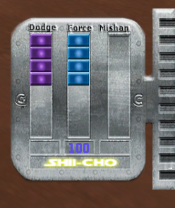

The OJP Enhanced Saber System Manual
(Originally obtained from: http://www.lucasforums.com/showthread.php?t=169198)
(Original Author: JRHockney; Revisions: The Unbeholden; Editing
and Formatting: Causticus)
Introduction
Thank you for downloading this mod and choosing to read this manual. It is important to understand the revised system, otherwise it may seem random and frustrating and you will die often and quickly (which happens much too often and it shouldn't)!!
The purpose of this manual is to instruct players who are new to OJP Enhanced on how to use the very different and unique saber system. This manual assumes that you already have a moderate to advanced level of understanding on how the base Jedi Academy saber system works. Without such knowledge, you will have a more difficult time understanding the content of this manual. This manual covers all of the major changes to the saber system and gives step-by-step instructions on how to perform certain critical moves. It is important to note that the new saber system was designed to be more cinematic than the base Jedi Academy saber system.
Due to the length of this manual, a summarized Quick Start Guide has been included to help players get right to the action without reading everything, however it is highly recommend to still read the rest of the manual so you understand the system in detail, including following the links to the visual movie references for the moves (the HUD is a little dated on the movies though). The better you understand the system, the more effective a saber dualist you will become.
Quick Start Guide
Important Notes
1. Dodge Points (DP) are indicated by the purple meter, referred to as your dodge or block meter. It will go down very fast if you don't Parry-Block most of the hits on you. When your defenses are down from a stumble, knock-down are a saberless hit, you will dodge the hit matrix style and lose double DP.
2. Mishap Points (MP) are indicated by the empty meter that fills up as you hit your opponent, referred to as your mishap (or off-balance) meter. It goes up faster if your opponent Parry-Blocks you a lot. The more MP you have, the more vulnerable you are to kicks, stumbling, and being knocked-down or disarmed.
3. You lose Force Points (FP) by swinging. At 10 FP or less, you swing and move very slowly and are completely vulnerable to a lunge.
4. As a rule of thumb, walk at least 3/4ths of the time during a fight because you lose double DP for hits on you if you run and it is fatal to be struck by your opponent while you are jumping. Running and hitting someone will do double DP damage to them, but if you get hit while swinging or from behind, it will kill you instantly.
5. Comboing on your swings is often the key to winning a fight, but do it strategically because you can still be beaten (or win) with pure defensive playing.
6. Kicks are available in all styles and take advantage of your opponent's current MP level or when they are at critical DP. It will cause a knock-down when your opponent's MP is near full or if they are at critical DP, a stumble at around ½ MP, or get absorbed by a back flip when they are low. Holding Alt-Attack when getting kicked will block or reduce your mishap effect at any mishap level.
7. You will notice that you may occasionally get paused in the middle of combat where you can not move. This is usually due to your MP becoming full and you were Parry-Blocked or Riposted. You will be slow-bounced at 1/3+ MP, heavy-bounced at 2/3+ MP or critical DP, and stumble or become disarmed or knocked-down at 9/10 MP. More info and visual references on these are in the official manual.
8. There are now a total of 7 styles to choose from at full saber attack points in single saber. You can also do lunge and Yellow "Death from Above" (DFA) in any single saber style and a Red DFA in both Purple and Red styles (Purple style looks different in its DFA though).
Moves
Parry-Block:
This is the most important technique. Hold the directional key to move into
whatever side you are getting hit on (i.e. "A" and "D" for
side hits, "S" for high up-down swings, and "W" for lunge
and low hits). This move lessens hit damage on you greatly. If your opponent's
MP is very high, they may max out their mishap meter and fall down or lose their
saber.
Start-Fake (aka Tap-Attack):
Hold the Attack for less than half the swing. This fakes people out and is important
for Ripostes.
Attack-Feint (aka Attack-Fake):
Hold the Attack and Alt-Attack with a directional key (basically like doing
a kata except you are doing a normal swing with it). This does more damage than
a normal swing, puts your opponent into a saber-lock in which you win automatically,
and it takes advantage of your opponent's current MP level. If you are in a
saber-lock, you can break it by holding "W" (back) and Alt-Attack
unless you have low DP or high MP.
Riposte (aka Attack-Parry):
Hold Attack while you Parry-Block a swing. This only works if you are already
in a pre-block for the incoming swing or you are in the Start-Fake sequence.
This move causes a slow-bounce on your opponent unless they have a high MP in
which case they will do whatever their MP level dictates.
Disarm:
If you hit your opponent's saber while they are in a heavy-bounce, they will
be disarmed.
Super-Break:
Hold Attack at the end of a saber-lock where you win. If you opponent's DP is
low, you will instantly kill them, otherwise you will be slow-bounced for trying
it.
Important General Knowledge
Before getting in to the step-by-step instructions, it is important to cover several basic aspects to this new saber system. Without knowledge of the key changes here, you will be confused about what is happening to you in the combat, so it is very important to keep these in mind. The important changes include the following:
• Regular swings require holding down the Attack button for at least half the swing, otherwise you will perform a Start-Fake.
• All swings of the saber drain your Force Points (FP) depending on the type of swing. When you have 10 FP or lower, your swings will slow down greatly. This helps to prevent too much swinging and button mashing, promoting skill and swordsmanship and making for a better duel.
• The Dodge Points (DP) meter, which is the purple meter adjacent to your Force Points meter (see Figure 2), drains as you absorb hits in different amounts, depending on the hit. Most of the time, it just acts as a block meter; however, if you are hit while you are stunned, disarmed, or knocked down, the dodge meter will cause you to perform an automatic matrix-style dodge, which will drain your DP more than a regular hit. When the DP meter flashes red, that means you have maybe one or two more hits until you are unable to block or dodge which can be fatal. Attack-Fakes, which are further explained in the step-by step section, can be fatal to a person who is in the DP red zone. It is important to note that your DP has no effect while you are jumping, so getting hit during a jump is also usually fatal.
• This newest version of Enhanced has added a "Mishap Meter" (see Figure 2) that displays your Mishap Points (MP) which are a measurement of how balanced or off-balanced you are. This meter controls whether or not you have a mishap from regular parries or Attack-Fakes. Your MP level increases as you swing, and decreases as you parry. At 40%, parries and Attack-Fakes on you will cause slow-bounces and your MP meter will decrease to zero. At 66%, parries and Attack-Fakes on you will cause heavy-bounces and your MP will decrease by 25% or to the next level down. When your meter is maxed out, you will have a mishap and your meter will reset to zero. The slow-bounces, heavy-bounces and mishaps will be explained in more detail later.
• Running is penalized during saber combat by making you lose double DP when you get hit and causing a much higher mishap probability. Hitting an opponent with a running swing will do one more DP damage; However, if you get hit while running and swinging, or if you are hit from behind while running, it will kill you instantly. Due to this factor, it is generally a better tactic to walk when swinging at a saberist and to use extra care when running in the vicinity of a saberist opponent. This is to add to the cinematic realism of the revise saber system and to just keep it mostly toe to toe.
• Crouching is penalized by not being able to parry while in a crouch. This is to prevent "crouching spam" that was discovered during beta play testing.
• There is only a very slight difference in the speeds at which all the saber styles move and the swings are all indefinitely chainable (even red stance).
• Tavion's and Desann's saber styles are now accessible with single saber and are colored on the FP HUD as Aqua (Tavion's) and Purple (Desann's).
• All the stances are a bit different in their DP damage scales, but not nearly as different as in base Jedi Academy. The damages are ordered from weakest to strongest:
• The Staff and Dual saber styles have their own unique characteristics as well. Staff costs no extra DP to get hit in the back making it a great two-on-one weapon. Dual sabers have no Attack Fake costs for direction changes (which is explained later).
• The Blue style lunge and Yellow style flip attack are now usable by all styles except Staff and Dual. Lunge does 25% more damage than a normal swing and flip attack does twice the DP damage of a regular swing. Lunge is parried by holding forward ("W") and if you hit someone in a lunge, you cause them double DP damage (lunge is also a great option to break through someone's defense if they are constantly parrying you). Flip attacks are used for getting behind your opponent. The Aqua, Blue, and Yellow styles use a stab flip attack while red and purple use the traditional slash. The difference between the two is visual only.
• Red and Purple styles have jump attacks, normally called a "Death From Above" (DFA) that cause double the normal saber hit DP damage. The Red style uses a jumping hack version while Purple uses a spinning jump. They are performed by first holding Attack to start the swing and then pressing and holding jump (the old JO way).
• All styles can kick by using the alternate weapon attack. Saber throw has become an option in the force powers selection menu.
Parrying
Parrying is the most important technique to master. It prevents you from losing too much DP and increases your opponents mishap meter. Parrying costs only 1/3 the normal amount of DP required to block a saber attack which means it is the "block" of this game more or less. You can usually parry even while swinging except for maybe at the peak for your swing (this knowledge is essential to winning duels). Most parries do a knock-away animation (or one-handed block) when performed correctly. The normal blocks just do normal block animations. Your opponent will bounce more slowly once you parry him and stop him from comboing (this is not in the video because its fairly new) Also look at the DP meter in the video to distinguish the DP damages.
Step 1: Watch the angle at which your opponent's swing. Determine whether it is a high swing, coming from the side, or a lunge, but also watch the angle at which it is about to hit you.
Step 2: Use your forward, left, back and right keys ("W",
"A", "S", and "D") to move into the swing.
It is important to remember that the direction for high swings is inverted from
what you might expect, i.e. you parry high swings by pressing the back key ("S").
Side swings are parried by moving into the swings with the side buttons ("A"
and "D"). Lunges or low swings can be parried by pressing forward
("W").
Note: The parry is determined based on where you get hit. For example,
if you get hit lower on your body with a high diagonal swing, the proper parry
direction would be to move to that side.
If you performed the parry successfully, your opponent's attack will be knocked-away and you will lose minimal DP. Visually, you will do a one-handed block and your opponent will bounce slowly. If your opponent's mishap meter was near full, they might max out and fall over or lose their saber.
Running Swings
Just as it sounds - just run and swing. These swings are the true power hits of this mod aside from the DFAs because they do more than the normal amount of DP damage, however these are very dangerous because if you are hit while running and swinging or are hit from behind while running with a saber, it will kill you instantly. Sneaking these hits in can be very beneficial, but they are easy to counter since you can just wave your saber at a running opponent and their running swing will most likely get them killed.
Block-to-Swing / Swing-to-Swing Transitions
This technique allows you to bounce out of your block into a swing faster than you usually would, or allows you to combo easier in different directions when your attack bounces off an opponent's saber. It is a very effective way of countering or making a follow-up attack after you have blocked or made an unsuccessful attack.
Step 1: Watch for a saber block or a bounce hit off an opponent. If your opponent parries you, you'll bounce slowly and will not be able to do the transition.
Step 2: Hold the Attack button and press a different movement direction than you blocked or swung in. Alternatively, just keep holding the Attack button and what ever direction your were holding before and it will automatically switch.
If your transition was successful, you will usually get the first hit and force a block by your opponent. If used correctly, you can chain several of these swings and do a lot of DP damage on your opponent.
Attack Fakes
Attack Fakes are a very useful technique that allows you to fake a swing in one direction and hit in another. The Attack Fake causes one-third more damage than the regular swing, however there is also a cost of 1 FP for each change of direction you do in the faking. This technique has been upgraded in OJP v0.1.0. Now if you hit your opponent with this move without being parried, you both will be forced into a very fast saber-lock animation in which you automatically win. If you get hit while trying an Attack Fake, the Attack Fake you do will be cancelled. The Attack Fake causes 25% more damage than a normal swing and can take advantage of your opponent's current MP level.
Step 1: Look for an appropriate situation to use an attack feint. Until you are comfortable with the timing of this technique, it is generally recommended to use this technique starting at a distance in order to avoid getting hit in the process.
Step 2: While pressing and holding Attack and Alt-Attack,
use the directional keys to change direction of the swing. By default,
the Attack Fakes will usually change directions at a 90 degree angle unless
you press in a different direction. The blur of your saber's core will be longer
then normal if you successfully do the Attack Fake.
Note: There are versions of sabers that use MB2's saber trail code
floating around the OJP community. If you use one of these sabers, you will
not be able to see the longer trail.
Try to hit your opponent with the Attack Fake at any location that their saber is not guarding, or where you are least likely to be parried. As with any swing, watch your opponent's movements and plan carefully where you want to hit. For example, if you hit high and they are moving backward, you will be automatically parried. It is also good to transition into another swing if you can in order to continue the attack and do more damage. You will know if you have successfully hit your opponent without being parried if you see both of you go into a quick saber-lock animation in which you win automatically (this is more for visual effect than anything). If you suspect that your opponent is in the DP red zone, hold the attack button until the end of the saber lock and you will deliver a fatal or near fatal hit (this is the Superbreak which will be described later - use with caution as if they are not in the DP red zone, you will be slow-bounced for trying it, leaving you open to a counter attack).
Start Fakes
These are occasionally referred to as wind up fakes or basic fakes. Start Fakes are a lot more straight-forward than Attack Fakes, but still useful in many ways. They cost no FP to use.
Step 1: Look for the right situation to use the Start Fake. Attack fakes have many uses depending on your personal preference. You can use them to fake out an opponent, disguise a parry (which can be done during the fake), and even block a swing for no DP cost if you move your saber in front of the opponent's swing (this is a very hard technique to do, but it also causes a little DP damage on your opponent at very close range).
Step 2: Tap the attack button and press the directional button for the desired Start Fake, or simply let go of the attack button during a windup or transition.
Step 3: Watch your opponent's reaction to the fake and plan your next move based on that reaction.
Ripostes/Attack Parries
A new move in this version of Enhanced is the Riposte or Attack Parry and uses the Start Fake as its aid. This will do exactly what all parries did in the previous version of Enhanced which is cause a slow bounce. This parry, however, does not completely rely on the mishap meter, causing a slow-bounce at any low point on the mishap meter, or a heavy bounce at higher points on the mishap meter (usually 66% or higher) or at critical DP.
Step 1: Watch where and when your opponents saber is about to hit you.
Step 2: Hold the proper parry direction as per regular parry and tap attack just as your opponents saber is about to hit you (sometimes taping it at the same time works to). You must be in a pre-block animation or a Start Fake animation for it to work, but you cannot be holding attack at the time of hit.
If performed properly, your opponent will go into a slow-bounce or heavy bounce.
Kicking
Kicking in OJP Enhanced is more structured than it was in base Jedi Academy. It is available with all styles, but only works in certain situations in order to avoid over usage. Any other instances using the kick other than ones listed below will result the opponent absorbing the kick with a low level back flip - just like the movies (See Video 8)! The effects of kicking someone are measured by your opponent's current MP level. The higher their MP, the more effective the kick will be on them. Also keep in mind that getting hit by your opponents saber while attempting a kick does more damage to you and you can not parry their swing.
Step 1: Observe whether or not if your opponent is either in a slow bounce, heavy bounce, a stun, has his back to you, or you think he might be higher on his mishap bar or critical DP. These are the only situations where kicking will knock your opponent down or make them stumble.
Step 2: Execute the kick by pressing alternate attack and the directional button towards your opponent (See Video 9).
When executed correctly, your opponent will fall over or stumble. This opens
them up to being slashed at on the ground for a large DP loss. Using lunge or
ground stab is especially useful and damaging in this situation.
Note: If your opponent's mishap bar is less then about 1/3 of the way
up, they will absorb the kick with a back flip
Slow Bounce Conversions
These are the hardest to perform, yet one of the coolest and most rewarding features in OJP Enhanced. It is a way to cause disarm mishaps before they could normally be caused (sadly, they may not always happen if your ping is really high). These also require your opponent to be in a heavy bounce.
Step 1: Observe if your opponent is in a more dynamic slow bounce animation. This happens when you Riposte your opponent at critical DP or a high MP. Their saber and arm will be extended further away from and more perpendicular to their body than normal.
Step 2: Hit your opponent's saber before the animation ends. This is very difficult to do in most cases. The best way to do this is to use a straight downward chop. Faster styles have a speed benefit at doing this as well as the ability to cause these slow bounces on opponents with slightly higher DP than the other styles are allowed.
When performed correctly, your opponent will enter a mishap, becoming disarmed, at which time you may follow up with a very damaging attack of your preference.
Superbreaks
This is essentially the OJP "finishing move". It requires the use of a move that causes a saber-lock, whether it be an Attack Fake, Attack Parry, or just a random lock. It only works if you are the person who initiated the lock and if your opponent is in the red zone of their DP meter (or has very little left). If both of these conditions are met, you will do the old saber-lock break animation and it will chop your opponent in half! (...usually)
Step 1: Try to determine whether or not your opponent is low on DP. If you hear the grinding nose of him losing HP, that is a good indication.
Step 2: Find a way to do a winning saber-lock on your opponent and hold the attack button to the end of the saber-lock.
Important note: If you try and Superbreak your opponent and they do not have low DP, you yourself will be slow-bounced!
Closing Comments and Support:
Ultimately, this saber system is all about movie realism and strives to achieve
it. It is not a finished product and is still being added to, so feel free to
post any questions or comments at the OJP forums: http://lucasforums.com/forumdisplay.php?f=542.
New ideas are welcome as well. If you encounter any technical difficulties,
post them at the forums as well and they will usually be responded to in 24
hours or less. Enjoy.